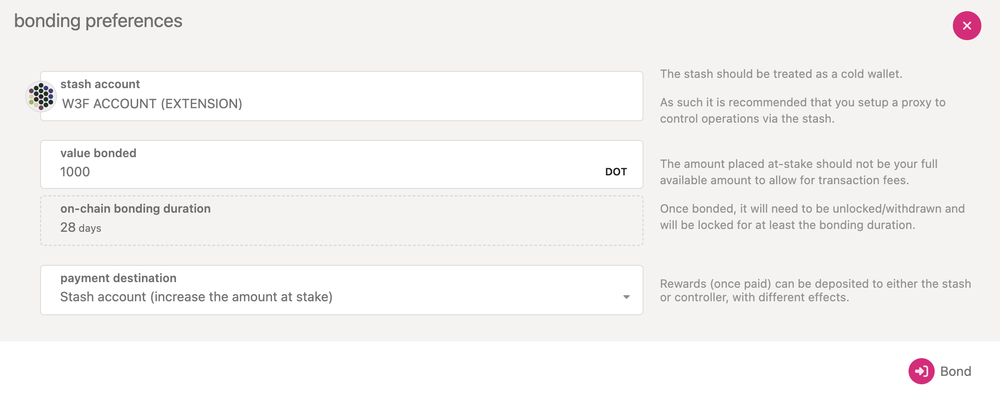
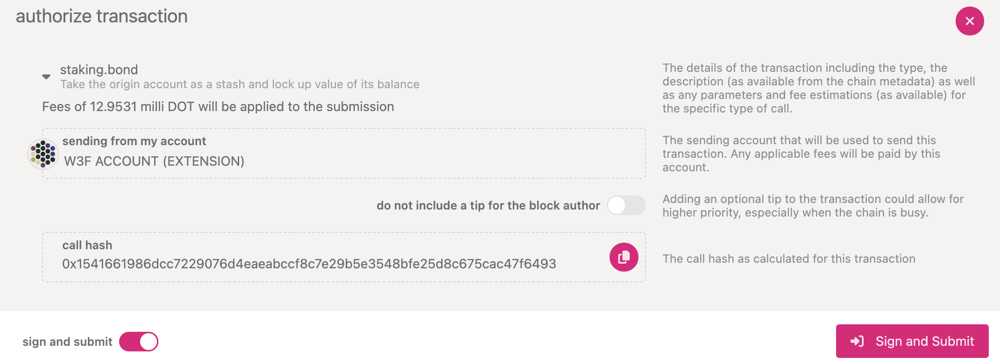
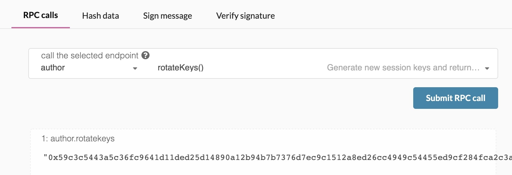
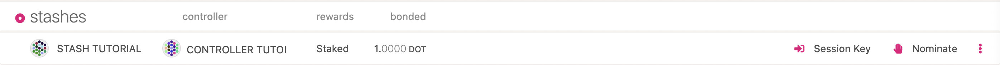
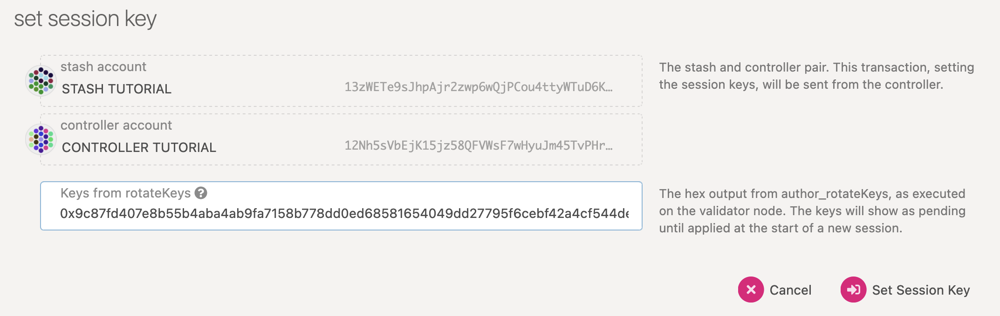
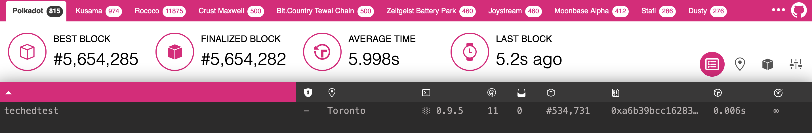
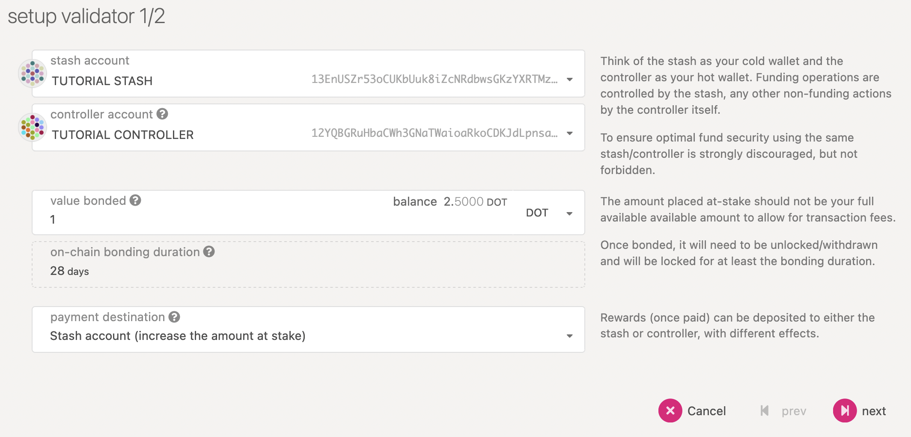
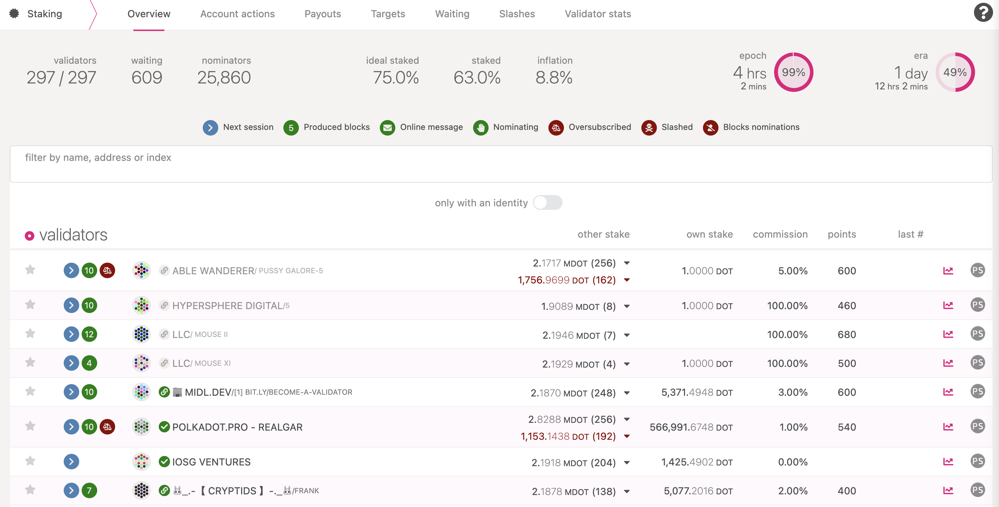
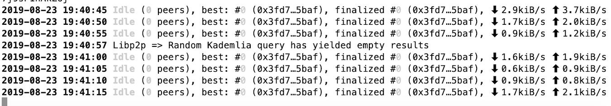

How to Validate Polkadot
Tip
If you are a beginner, it is recommended that you start your validator journey on Kusama network. Check the Kusama guide for details on how to get started.
Preliminaries¶
Running a validator on a live network is a lot of responsibility! You will be accountable for not only your own stake, but also the stake of your current nominators. If you make a mistake and get slashed, your tokens and your reputation will be at risk. However, running a validator can also be very rewarding, knowing that you contribute to the security of a decentralized network while growing your stash.
Warning
It is highly recommended that you have significant system administration experience before attempting to run your own validator.
You must be able to handle technical issues and anomalies with your node which you must be able to tackle yourself. Being a validator involves more than just executing the Polkadot binary.
Since security is so important to running a successful validator, you should take a look at the secure validator information to make sure you understand the factors to consider when constructing your infrastructure. As you progress in your journey as a validator, you will likely want to use this repository as a starting point for your own modifications and customizations.
If you need help, please reach out on the Polkadot Validator Lounge on Element. The team and other validators are there to help answer questions and provide tips from experience.
How many DOT do I need to become an active Validator?¶
You can have a rough estimate on that by using the methods listed here. To be elected into the set, you need a minimum stake behind your validator. This stake can come from yourself or from nominators. This means that as a minimum, you will need enough DOT to set up stash (and optionally a staking proxy account) with the existential deposit, plus a little extra for transaction fees. The rest can come from nominators. To understand how validators are elected, check the NPoS Election algorithms page.
For further reference, you may look at the statistics for current, active validators. For Kusama see here.
Warning: Any DOT that you stake for your validator is liable to be slashed, meaning that an insecure or improper setup may result in loss of DOT tokens! If you are not confident in your ability to run a validator node, it is recommended to nominate your DOT to a trusted validator node instead.
Initial Set-up¶
Requirements¶
The most common way for a beginner to run a validator is on a cloud server running Linux. You may choose whatever VPS provider that you prefer. As OS it is best to use a recent Debian Linux. For this guide we will be using Ubuntu 22.04, but the instructions should be similar for other platforms.
Reference Hardware¶
The transaction weights in Polkadot are benchmarked on reference hardware. We ran the benchmark on
VM instances of two major cloud providers: Google Cloud Platform (GCP) and Amazon Web Services
(AWS). To be specific, we used n2-standard-8 VM instance on GCP and c6i.4xlarge on AWS. It is
recommended that the hardware used to run the validators at least matches the specs of the reference
hardware in order to ensure they are able to process all blocks in time. If you use subpar hardware
you will possibly run into performance issues, get less era points, and potentially even get
slashed.
- CPU
- x86-64 compatible;
- Intel Ice Lake, or newer (Xeon or Core series); AMD Zen3, or newer (EPYC or Ryzen);
- 4 8 physical cores @ 3.4GHz; starting with January 2025, the recommendation is to use a hardware with at least 8 physical cores, see referenda for more details about the rationale;
- Simultaneous multithreading disabled (Hyper-Threading on Intel, SMT on AMD);
- Prefer single-threaded performance over higher cores count. A comparison of single-threaded performance can be found here.
- Storage
- An NVMe SSD of 1 TB (As it should be reasonably sized to deal with blockchain growth). An estimation of current chain snapshot sizes can be found here. In general, the latency is more important than the throughput.
- Memory
- 32 GB DDR4 ECC.
- System
- Linux Kernel 5.16 or newer.
- Network
- The minimum symmetric networking speed is set to 500 Mbit/s (= 62.5 MB/s). This is required to support a large number of parachains and allow for proper congestion control in busy network situations.
The specs posted above are not a hard requirement to run a validator, but are considered best practice. Running a validator is a responsible task; using professional hardware is a must in any way.
Install & Configure Network Time Protocol (NTP) Client¶
NTP is a networking protocol designed to synchronize the clocks of computers over a network. NTP allows you to synchronize the clocks of all the systems within the network. Currently it is required that validators' local clocks stay reasonably in sync, so you should be running NTP or a similar service. You can check whether you have the NTP client by running:
If you are using Ubuntu 18.04 or a newer version, NTP Client should be installed by default.
timedatectl
If NTP is installed and running, you should see System clock synchronized: yes (or a similar
message). If you do not see it, you can install it by executing:
sudo apt-get install ntp
ntpd will be started automatically after install. You can query ntpd for status information to verify that everything is working:
sudo ntpq -p
Warning
Skipping this can result in the validator node missing block authorship opportunities. If the clock is out of sync (even by a small amount), the blocks the validator produces may not get accepted by the network.
Make Sure Landlock is Enabled¶
Landlock is a Linux security feature used in Polkadot:
Landlock empowers any process, including unprivileged ones, to securely restrict themselves.
To make use of landlock, make sure you are on the reference kernel version or newer. Most Linux distributions should already have landlock enabled, but you can check by running the following as root:
dmesg | grep landlock || journalctl -kg landlock
If it is not enabled, please see the official docs ("Kernel support") if you would like to build Linux with landlock enabled.
Installing the Polkadot binaries¶
Multiple Validator Binaries
In addition to the polkadot binary, recent changes have separated out functionality into two
additional needed binaries, polkadot-prepare-worker, and polkadot-execute-worker. All three
binaries are needed to properly run a validator node. More context on these changes can be found
here
Installation from official releases¶
The official binaries can be downloaded from the Github Releases. You should download the latest available version. You can also download the binaries by using the following direct links (replace X.Y.Z by the appropriate version):
https://github.com/paritytech/polkadot-sdk/releases/download/polkadot-vX.Y.Z/polkadot
https://github.com/paritytech/polkadot-sdk/releases/download/polkadot-vX.Y.Z/polkadot-execute-worker
https://github.com/paritytech/polkadot-sdk/releases/download/polkadot-vX.Y.Z/polkadot-prepare-worker
Optional: Installation with Package Managers¶
The Polkadot Binary in included in Debian derivatives (i.e. Debian, Ubuntu) and
RPM-based distros (i.e. Fedora, CentOS).
Debian-based (Debian, Ubuntu)¶
Run the following commands as the root user:
# Import the security@parity.io GPG key
gpg --recv-keys --keyserver hkps://keys.mailvelope.com 9D4B2B6EB8F97156D19669A9FF0812D491B96798
gpg --export 9D4B2B6EB8F97156D19669A9FF0812D491B96798 > /usr/share/keyrings/parity.gpg
# Add the Parity repository and update the package index
echo 'deb [signed-by=/usr/share/keyrings/parity.gpg] https://releases.parity.io/deb release main' > /etc/apt/sources.list.d/parity.list
apt update
# Install the `parity-keyring` package - This will ensure the GPG key
# used by APT remains up-to-date
apt install parity-keyring
# Install polkadot
apt install polkadot
RPM-based (Fedora, CentOS)¶
Run the following commands as the root user:
# Install dnf-plugins-core (This might already be installed)
dnf install dnf-plugins-core
# Add the repository and enable it
dnf config-manager --add-repo https://releases.parity.io/rpm/polkadot.repo
dnf config-manager --set-enabled polkadot
# Install polkadot (You may have to confirm the import of the GPG key, which
# should have the following fingerprint: 9D4B2B6EB8F97156D19669A9FF0812D491B96798)
dnf install polkadot
Make sure you verify the installation (see the "Verify the installation" section).
By default, the Polkadot systemd service is disabled
To start the service, run:
sudo systemctl start polkadot.service
Optional: Installation with Ansible¶
To manage Polkadot installation with Ansible, you can use the Substrate node role distributed on the Parity chain operations Ansible collection
Optional: Installation with Docker¶
To run Polkadot on a Docker or an OCI compatible container runtime, you can use the official parity/polkadot docker image, available on Docker Hub (replace X.Y.Z by the appropriate version):
docker.io/parity/polkadot:vX.Y.Z
Optional: Building the Polkadot binaries from sources¶
Prerequisites: Install Rust and Dependencies¶
If you have never installed Rust, you should do this first.
If you have already installed Rust, run the following command to make sure you are using the latest version.
rustup update
If not, this command will fetch the latest version of Rust and install it.
curl https://sh.rustup.rs -sSf | sh -s -- -y
Note
If you do not have "curl" installed, run:
sudo apt install curl
It will also be valuable to have "websocat" (Netcat, curl and socat for WebSockets) installed for RPC interactions. Installation instructions for various operating systems can be found here.
To configure your shell, run the following command.
source $HOME/.cargo/env
Verify your installation.
rustc --version
Finally, run this command to install the necessary dependencies for compiling and running the Polkadot node software.
sudo apt install make clang pkg-config libssl-dev build-essential
Note
If you are using OSX and you have Homebrew installed, you can issue the following equivalent command INSTEAD of the previous one:
brew install cmake pkg-config openssl git llvm
Building the binaries¶
You can build the Polkadot binaries from the paritytech/polkadot-sdk repository on GitHub.
You should generally use the latest X.Y.Z tag. You should either review the output from the "git
tag" command or view the Polkadot SDK Github tags
to see a list of all the available release versions. You should replace VERSION below with the
latest build (i.e., the highest number).
Note
If you prefer to use SSH rather than HTTPS, you can replace the first line of the below with
git clone git@github.com:paritytech/polkadot-sdk.git
git clone https://github.com/paritytech/polkadot-sdk.git
cd polkadot-sdk/polkadot
Run the following command to find the latest version.
git tag -l | sort -V | grep -v -- '-rc'
Find the latest version; replace "VERSION" in the command below and run to change your branch.
git checkout VERSION
Build native code with the production profile. The following will make sure that the binaries are
all in your $PATH.
cargo install --force --path . --profile production
This step will take a while (generally 10 - 40 minutes, depending on your hardware).
Compilation Errors
If you run into compile errors, you may have to pin the version of Rust compiler to the one that was
used to build the release. Check out Rust compiler versions section in the release notes. This can
be done by running:
rustup install nightly-2022-05-18
rustup target add wasm32-unknown-unknown --toolchain nightly-2022-05-18
cargo +nightly-2022-05-18 build --release
You may also need to run the build more than once.
If you would like to execute the tests, run the following command:
cargo test --all
If you are interested in generating keys locally, you can also install subkey from the same
directory. You may then take the generated subkey executable and transfer it to an air-gapped
machine for extra security.
cargo install --force --git https://github.com/paritytech/polkadot-sdk subkey
Verify the installation¶
After installing Polkadot, you can verify the installation by running
polkadot --version
polkadot-execute-worker --version
polkadot-prepare-worker --version
It should return something like this (the exact versions don't matter, but they must all be the same):
0.9.43-36264cb36db
0.9.43-36264cb36db
0.9.43-36264cb36db
If not, make sure that you installed all the binaries, all the binaries are somewhere in your
$PATH and they are all in the same folder.
Synchronize Chain Data¶
You can begin syncing your node by running the following command if you do not want to start in validator mode right away:
polkadot
Info
If you want to run a validator on Kusama, you have an option to specify the chain. With no specification, this would default to Polkadot.
polkadot --chain=kusama
2021-06-17 03:07:07 Parity Polkadot
2021-06-17 03:07:07 ✌️ version 0.9.5-95f6aa201-x86_64-linux-gnu
2021-06-17 03:07:07 ❤️ by Parity Technologies <admin@parity.io>, 2017-2021
2021-06-17 03:07:07 📋 Chain specification: Polkadot
2021-06-17 03:07:07 🏷 Node name: boiling-pet-7554
2021-06-17 03:07:07 👤 Role: FULL
2021-06-17 03:07:07 💾 Database: RocksDb at /root/.local/share/polkadot/chains/polkadot/db
2021-06-17 03:07:07 ⛓ Native runtime: polkadot-9050 (parity-polkadot-0.tx7.au0)
2021-06-17 03:07:10 🏷 Local node identity is: 12D3KooWLtXFWf1oGrnxMGmPKPW54xWCHAXHbFh4Eap6KXmxoi9u
2021-06-17 03:07:10 📦 Highest known block at #17914
2021-06-17 03:07:10 〽️ Prometheus server started at 127.0.0.1:9615
2021-06-17 03:07:10 Listening for new connections on 127.0.0.1:9944.
Example of node sync
2021-06-17 03:07:39 🔍 Discovered new external address for our node: /ip4/10.26.16.1/tcp/30333/ws/p2p/12D3KooWLtXFWf1oGrnxMGmPKPW54xWCHAXHbFh4Eap6KXmxoi9u
2021-06-17 03:07:40 ⚙️ Syncing 218.8 bps, target=#5553764 (17 peers), best: #24034 (0x08af…dcf5), finalized #23552 (0xd4f0…2642), ⬇ 173.5kiB/s ⬆ 12.7kiB/s
2021-06-17 03:07:45 ⚙️ Syncing 214.8 bps, target=#5553765 (20 peers), best: #25108 (0xb272…e800), finalized #25088 (0x94e6…8a9f), ⬇ 134.3kiB/s ⬆ 7.4kiB/s
2021-06-17 03:07:50 ⚙️ Syncing 214.8 bps, target=#5553766 (21 peers), best: #26182 (0xe7a5…01a2), finalized #26112 (0xcc29…b1a9), ⬇ 5.0kiB/s ⬆ 1.1kiB/s
2021-06-17 03:07:55 ⚙️ Syncing 138.4 bps, target=#5553767 (21 peers), best: #26874 (0xcf4b…6553), finalized #26624 (0x9dd9…27f8), ⬇ 18.9kiB/s ⬆ 2.0kiB/s
2021-06-17 03:08:00 ⚙️ Syncing 37.0 bps, target=#5553768 (22 peers), best: #27059 (0x5b73…6fc9), finalized #26624 (0x9dd9…27f8), ⬇ 14.3kiB/s ⬆ 4.4kiB/s
Use Warp sync for faster syncing
By default, the node performs full sync, which downloads and validates the full blockchain
history. Full sync works by listening to announced blocks and requesting the blocks from the
announcing peers, or just the block headers in case of light clients.
Fast sync is another option that works by downloading the block header history and validating the
authority set changes in order to arrive at a specific (usually the most recent) header. After the
desired header has been reached and verified, the state can be downloaded and imported. Once this
process has been completed, the node can proceed with a full sync.
polkadot --sync warp
Warp sync initially downloads and validates the finality proofs from
GRANDPA and then downloads the state of the
latest finalized block. After the warp sync, the node is ready to import the latest blocks from the
network and can be used as a Validator. The blocks from genesis will be downloaded in the
background. Check
this discussion
for more information about the different sync options available.
Validators should sync using the RocksDb backend
This is implicit by default, but can be explicit by passing the --database RocksDb flag.
In the future, it is recommended to switch to the faster and more efficient ParityDB option. Note
that ParityDB is still experimental and should not be used in production. If you want to test
out ParityDB, you can add the flag --database paritydb. Switching between database backends will
require a resync.
Depending on the size of the chain when you do this, this step may take anywhere from a few minutes to a few hours.
If you are interested in determining how much longer you have to go, your server logs (printed to
STDOUT from the polkadot process) will tell you the latest block your node has processed and
verified. You can then compare that to the current highest block via
Telemetry or the
PolkadotJS Block Explorer.
Database Snapshot Services¶
If you start a node for the first time, it will start building from the genesis block. This process can take a while depending on the database size. To make this process faster, snapshots can be used. Snapshots are compressed backups of the database directory of Polkadot/Kusama nodes, containing the whole chain (or a pruned version of it, with states only from the latest 1000 or 256 blocks). Listed below are a few public snapshot providers for Polkadot and Kusama.
Caution
For the security of the network, it is recommended that you sync from scratch, even if you are running your node in pruning mode for validation. The reason is that if these snapshots get corrupted and a majority of nodes run based on these snapshots, the network could end up running on a non-canonical chain.
Bond DOT¶
There is a minimum bond to start a validator instance, but to enter the active validator set and be eligible to earn rewards, your validator node should be nominated by a minimum number of DOT tokens.
If you are validator who intends to get DOT/KSM nominations from the community, you will need to show some skin in the game. For that, you need to bond some DOT/KSM as own stake. Make sure not to bond all your DOT balance since you will be unable to pay transaction fees from your bonded balance.
Controller accounts are deprecated. Use Staking Proxy.
Controller accounts are deprecated. For more information, see this discussion. It is highly recommended that you setup an account with a staking proxy, which can be used for issuing start and stop validating calls. Read more about proxy accounts here.
First, go to the Staking section. Click on "Account Actions", and then the "+ Stash" button.

- Stash account - Select your Stash account (which is the account with the DOT/KSM balance)
- Value bonded - How much DOT from the Stash account you want to bond/stake. Note that you do not need to bond all of the DOT in that account. Also note that you can always bond more DOT later. However, withdrawing any bonded amount requires the duration of the unbonding period. On Kusama, the unbonding period is 7 days. On Polkadot, the planned unbonding period is 28 days.
- Payment destination - The account where the rewards from validating are sent. More info here. Starting with runtime version v23 natively included in client version 0.9.3, payouts can go to any custom address. If you'd like to redirect payments to an account that is not the stash account, you can do it by entering the address here. Note that it is extremely unsafe to set an exchange address as the recipient of the staking rewards.
Once everything is filled in properly, click Bond and sign the transaction with your Stash
account.

After a few seconds, you should see an ExtrinsicSuccess message.
Your bonded account will be available under Stashes. You should now see a new card with all your
accounts (note: you may need to refresh the screen). The bonded amount on the right corresponds to
the funds bonded by the Stash account.
Set Session Keys¶
Session keys are consensus critical
If you are not sure if your node has the current session keys that you made the setKeys
transaction then you can use one of the two available RPC methods to query your node:
hasKey to
check for a specific key or
hasSessionKeys
to check the full session key public key string.
Once your node is fully synced, stop the process by pressing Ctrl-C. At your terminal prompt, you will now start running the node.
polkadot --validator --name "name on telemetry"
Similarly:
2021-06-17 03:12:08 Parity Polkadot
2021-06-17 03:12:08 ✌️ version 0.9.5-95f6aa201-x86_64-linux-gnu
2021-06-17 03:12:08 ❤️ by Parity Technologies <admin@parity.io>, 2017-2021
2021-06-17 03:12:08 📋 Chain specification: Polkadot
2021-06-17 03:12:08 🏷 Node name: nateched-test
2021-06-17 03:12:08 👤 Role: AUTHORITY
2021-06-17 03:12:08 💾 Database: RocksDb at /root/.local/share/polkadot/chains/polkadot/db
2021-06-17 03:12:08 ⛓ Native runtime: polkadot-9050 (parity-polkadot-0.tx7.au0)
2021-06-17 03:12:12 🏷 Local node identity is: 12D3KooWLtXFWf1oGrnxMGmPKPW54xWCHAXHbFh4Eap6KXmxoi9u
2021-06-17 03:12:12 📦 Highest known block at #64673
2021-06-17 03:12:12 〽️ Prometheus server started at 127.0.0.1:9615
2021-06-17 03:12:12 Listening for new connections on 127.0.0.1:9944.
2021-06-17 03:12:12 👶 Starting BABE Authorship worker
2021-06-17 03:12:16 🔍 Discovered new external address for our node: /ip4/10.26.11.1/tcp/30333/p2p/12D3KooWLtXFWf1oGrnxMGmPKPW54xWCHAXHbFh4Eap6KXmxoi9u
2021-06-17 03:12:17 ⚙️ Syncing, target=#5553810 (14 peers), best: #65068 (0x6da5…0662), finalized #65024 (0x4e84…d170), ⬇ 352.2kiB/s ⬆ 75.6kiB/s
You can give your validator any name that you like, but note that others will be able to see it, and it will be included in the list of all servers using the same telemetry server. Since numerous people are using telemetry, it is recommended that you choose something likely to be unique.
Generating the Session Keys¶
You need to tell the chain your Session keys by signing and submitting an extrinsic. This is what associates your validator node with your stash account on Polkadot.
Option 1: PolkadotJS-APPS¶
You can generate your Session keys in the client via the apps RPC. If you are doing this, make sure that you have the PolkadotJS-Apps explorer attached to your validator node. You can configure the apps dashboard to connect to the endpoint of your validator in the Settings tab. If you are connected to a default endpoint hosted by Parity of Web3 Foundation, you will not be able to use this method since making RPC requests to this node would effect the local keystore hosted on a public node and you want to make sure you are interacting with the keystore for your node.
Once ensuring that you have connected to your node, the easiest way to set session keys for your
node is by calling the author_rotateKeys RPC request to create new keys in your validator's
keystore. Navigate to Toolbox tab and select RPC Calls then select the author > rotateKeys() option
and remember to save the output that you get back for a later step.

Option 2: CLI¶
If you are on a remote server, it is easier to run this command on the same machine (while the node is running with the default WS RPC port configured):
curl -H "Content-Type: application/json" -d '{"id":1, "jsonrpc":"2.0", "method": "author_rotateKeys", "params":[]}' http://localhost:9944
The output will have a hex-encoded "result" field. The result is the concatenation of the four public keys. Save this result for a later step.
You can restart your node at this point.
Submitting the setKeys Transaction¶
You need to tell the chain your Session keys by signing and submitting an extrinsic. This is what associates your validator with your staking proxy.
Go to Staking > Account Actions, and click "Set
Session Key" on the bonding account you generated earlier. Enter the output from author_rotateKeys
in the field and click "Set Session Key".
 
Submit this extrinsic and you are now ready to start validating.
Setting the Node (aka Network) Key¶
Validators must use a static network key to maintain a stable node identity across restarts. Starting with Polkadot version 1.11, a check is performed on startup, and the following error will be printed if a static node key is not set:
Error:
0: Starting an authority without network key
This is not a safe operation because other authorities in the network may depend on your node having a stable identity.
Otherwise these other authorities may not being able to reach you.
If it is the first time running your node you could use one of the following methods:
1. [Preferred] Separately generate the key with: <NODE_BINARY> key generate-node-key --base-path <YOUR_BASE_PATH>
2. [Preferred] Separately generate the key with: <NODE_BINARY> key generate-node-key --file <YOUR_PATH_TO_NODE_KEY>
3. [Preferred] Separately generate the key with: <NODE_BINARY> key generate-node-key --default-base-path
4. [Unsafe] Pass --unsafe-force-node-key-generation and make sure you remove it for subsequent node restarts"
The recommended solution is to generate a node key and save it to a file using
polkadot key generate-node-key --file <PATH_TO_NODE_KEY>, then attach it to your node with
--node-key-file <PATH_TO_NODE_KEY>.
Please see polkadot-sdk#3852 for the rationale behind this change.
Validate¶
To verify that your node is live and synchronized, head to Telemetry and find your node. Note that this will show all nodes on the Polkadot network, which is why it is important to select a unique name!
In this example, we used the name techedtest and have successfully located it upon searching:

Setup via Validator Tab¶

Here you will need to input the Keys from rotateKeys, which is the Hex output from
author_rotateKeys. The keys will show as pending until applied at the start of a new session.
The "reward commission percentage" is the commission percentage that you can declare against your validator's rewards. This is the rate that your validator will be commissioned with.
- Payment preferences - You can specify the percentage of the rewards that will get paid to you. The remaining will be split among your nominators.
Caution
Setting a commission rate of 100% suggests that you do not want your validator to receive nominations.
You can also determine if you would like to receive nominations with the "allows new nominations" option.

Click "Bond & Validate".
If you go to the "Staking" tab, you will see a list of active validators currently running on the network. At the top of the page, it shows the number of validator slots that are available as well as the number of nodes that have signaled their intention to be a validator. You can go to the "Waiting" tab to double check to see whether your node is listed there.

The validator set is refreshed every era. In the next era, if there is a slot available and your node is selected to join the validator set, your node will become an active validator. Until then, it will remain in the waiting queue. If your validator is not selected to become part of the validator set, it will remain in the waiting queue until it is. There is no need to re-start if you are not selected for the validator set in a particular era. However, it may be necessary to increase the number of DOT staked or seek out nominators for your validator in order to join the validator set.
Congratulations! If you have followed all of these steps, and been selected to be a part of the validator set, you are now running a Polkadot validator! If you need help, reach out on the Polkadot Validator chat.
Decentralized Nodes Program¶
The Decentralized Nodes program is a joint initiative by Web3 Foundation and Parity Technologies to provide support for community validators. If you are interested in applying for the program, you can find more information here.
Running a validator on a testnet¶
To verify your validator setup, it is possible to run it against a PoS test network such as Westend. However, validator slots are intentionally limited on Westend to ensure stability and availability of the testnet for the Polkadot release process.
Here is a small comparison of each network characteristics as relevant to validators:
| Network | Polkadot | Westend |
|---|---|---|
| epoch | 4h | 1h |
| era | 1d | 6h |
| token | DOT | WND (test) |
| active validators | ~300 | ~20 |
FAQ¶
Why am I unable to synchronize the chain with 0 peers?¶

Make sure to enable 30333 libp2p port. Eventually, it will take a little bit of time to discover
other peers over the network.
How do I clear all my chain data?¶
polkadot purge-chain
Info
Check out the Substrate StackExchange to quickly get the answers you need.
Note about VPS¶
VPS providers are very popular for running servers of any kind. Extensive benchmarking was conducted to ensure that VPS servers are able to keep up with the work load in general.
Note
Before you run a live Validator, please verify if the advertised performance is actually delivered consistently by the VPS provider.
The following server types showed acceptable performance during the benchmark tests. Please note that this is not an endorsement in any way:
- GCP's c2 and c2d machine families
- AWS's c6id machine family
The following additional configurations were applied to the instances to tune their performance:
Disable SMT¶
As critical path of Substrate is single-threaded we need to optimize for single-core CPU performance. The node still profits from multiple cores when doing networking and other non-runtime operations. It is therefore still necessary to run it on at least the minimum required number of cores. Disabling SMT improves the performance as each vCPU becomes mapped to a physical CPU core rather than being presented to the OS as two logical cores. SMT implementation is called Hyper-Threading on Intel and 2-way SMT on AMD Zen. To disable SMT in runtime:
for cpunum in $(cat /sys/devices/system/cpu/cpu*/topology/thread_siblings_list | cut -s -d, -f2- | tr ',' '\n' | sort -un)
do
echo 0 > /sys/devices/system/cpu/cpu$cpunum/online
done
It will disable every other (vCPU) core.
To save changes permanently add nosmt=force as kernel parameter. Edit /etc/default/grub and add
nosmt=force to GRUB_CMDLINE_LINUX_DEFAULT variable and run sudo update-grub. After the reboot
you should see half of the cores are offline. Run lscpu --extended to confirm.
Disable automatic NUMA balancing¶
If you have multiple physical CPUs (CPU0 and CPU1) in the system each with its own memory bank (MB0 and MB1), then it is usually slower for a CPU0 to access MB1 due to the slower interconnection. To prevent the OS from automatically moving the running Substrate process from one CPU to another and thus causing an increased latency, it is recommended to disable automatic NUMA balancing.
With automatic NUMA balancing disabled, an OS will always run a process on the same NUMA node where it was initially scheduled.
To disable NUMA balancing in runtime:
sysctl kernel.numa_balancing=0
To save changes permanently, update startup options and reconfigure GRUB. Edit /etc/default/grub
and add numa_balancing=disable to GRUB_CMDLINE_LINUX_DEFAULT variable and run
sudo update-grub. After reboot you can confirm the change by running
sysctl -a | grep 'kernel.numa_balancing' and checking if the parameter is set to 0
Configure Spectre/Meltdown Mitigations¶
Spectre and Meltdown are vulnerabilities discovered in modern CPUs a few years ago. Mitigations were made to the Linux kernel to cope with the multiple variations of these attacks. Check out https://meltdownattack.com/ for more info.
Initially those mitigations added ~20% penalty to the performance of the workloads. As CPU manufacturers started to roll-out mitigations implemented in hardware, the performance gap narrowed down. As the benchmark demonstrates, the performance penalty got reduced to ~7% on Intel 10th Gen CPUs. This is true for the workloads running on both bare-metal and VMs. But the penalty remains high for the containerized workloads in some cases.
As demonstrated in Yusuke Endoh's article, a performance penalty for containerized workloads can be as high as 100%. This is due to SECCOMP profile being overprotective about applying Spectre/Meltdown mitigations without providing real security. A longer explanation is available in the kernel patch discussion.
Linux 5.16 loosened the protections applied to SECCOMP threads by default. Containers running on kernel 5.16 and later now don't suffer from the performance penalty implied by using a SECCOMP profile in container runtimes.
For Linux >= 5.16¶
You are all set. The performance of containerized workloads is on par with non-containerized ones. You don't have to do anything.
For Linux < 5.16¶
You'll need to disable mitigations for Spectre V2 for user-space tasks as well as Speculative Store Bypass Disable (SSBD) for Spectre V4. This patch message describes the reasoning for this default change in more detail:
Ultimately setting SSBD and STIBP by default for all seccomp jails is a bad sweet spot and bad default with more cons than pros that end up reducing security in the public cloud (by giving an huge incentive to not expose SPEC_CTRL which would be needed to get full security with IBPB after setting nosmt in the guest) and by excessively hurting performance to more secure apps using seccomp that end up having to opt out with SECCOMP_FILTER_FLAG_SPEC_ALLOW.
To disable the mitigations edit /etc/default/grub and add
spec_store_bypass_disable=prctl spectre_v2_user=prctl to GRUB_CMDLINE_LINUX_DEFAULT variable,
run sudo update-grub, then reboot.
Note that mitigations are not disabled completely. You can fully disable all the available kernel
mitigations by setting mitigations=off. But we don't recommend doing this unless you run a fully
trusted code on the host.
VPS List¶
Beware of the Terms and Conditions and Acceptable Use Policies for each VPS provider
You may be locked out of your account and your server shut down if you come in violation. For instance, Digital Ocean lists "Mining of Cryptocurrencies" under the Network Abuse section of their Acceptable Use Policy and requires explicit permission to do so. This may extend to other cryptocurrency activity.